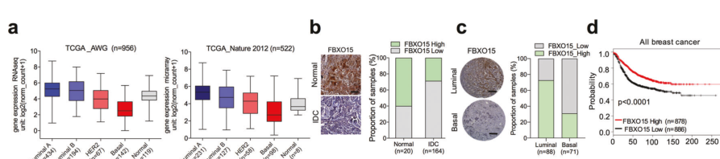

FBXO15 (F-box only protein 15, FBX15) is a 510-amino-acid F-box protein of the "FBXO/other" class that serves as the substrate-recognition component of an SCF (SKP1-CUL1-F-box protein, also called CRL1) cullin-RING E3 ubiquitin ligase complex. Like other F-box proteins, it docks onto the SCF core through its F-box domain (residues 77-117), which binds the adaptor SKP1; SKP1 in turn bridges to the scaffold CUL1 and the catalytic RING subunit RBX1 that recruits the ubiquitin-charged E2 enzyme. FBXO15 therefore does not itself possess catalytic ubiquitin-transfer activity; it confers substrate specificity on the ligase, positioning a bound target protein for poly-ubiquitination and subsequent proteasomal degradation. Several substrates have been experimentally reported, often recruited through modification-dependent degrons: FBXO15 uniquely associates with and degrades cardiolipin synthase 1 (CLS1) in a PINK1-linked module (phospho-Thr219-dependent recognition; CLS1 Lys174 ubiquitination), an ER/cytosol-associated activity that limits mitochondrial cardiolipin and has been implicated in pneumonia/lung-injury models; it cooperates with the E2 CDC34/UBE2R1 to ubiquitinate the drug-efflux transporter P-glycoprotein (ABCB1/MDR1), so that FBXO15 loss raises P-gp levels and multidrug resistance; and in breast cancer it promotes ubiquitin-dependent degradation of the stemness/signaling factors SOX2 and STAT3, dampening EGFR/ERK/STAT3 signaling and acting as a tumor suppressor (higher FBXO15 expression correlating with better survival). In mouse embryonic stem cells the ortholog recognizes an acetyldegron on KBP (acetyl-Lys501) and is preferentially expressed in undifferentiated cells, linking it to pluripotency biology. FBXO15 is expressed broadly with enhancement in testis and fallopian tube. Two splice isoforms are produced, the shorter of which lacks the N-terminal region preceding the F-box domain. Despite these reports, most substrate-pathway links rest on individual studies and the integrated physiological role of human FBXO15 remains only partly defined.
| GO Term | Evidence | Action | Reason |
|---|---|---|---|
|
GO:0019005
SCF ubiquitin ligase complex
|
IBA
GO_REF:0000033 |
ACCEPT |
Summary: Phylogenetic assignment that FBXO15 is part of the SCF (SKP1-CUL1-F-box) E3 ubiquitin ligase complex, the core localization/assembly for an F-box substrate receptor.
Reason: Core localization; FBXO15 is an F-box protein that, per UniProt, directly interacts with SKP1 and CUL1 and is the substrate-recognition component of the SCF complex. This is the central, family-conserved assignment.
Supporting Evidence:
file:human/FBXO15/FBXO15-uniprot.txt
Substrate-recognition component of the SCF (SKP1-CUL1-F-box protein)-type E3 ubiquitin ligase complex.
|
|
GO:1990756
ubiquitin-like ligase-substrate adaptor activity
|
NAS
PMID:34445249 The SCF Complex Is Essential to Maintain Genome and Chromoso... |
NEW |
Summary: Proposed NEW molecular-function annotation. As an F-box protein, FBXO15 is the substrate-recognition (substrate-adaptor) subunit of an SCF/CRL1 E3 ligase; it does not itself catalyze ubiquitin transfer (the RING subunit RBX1 is catalytic). The appropriate informative MF for an F-box substrate receptor is ubiquitin-like ligase-substrate adaptor activity (GO:1990756) rather than ubiquitin protein ligase activity. GOA currently carries no MF annotation for FBXO15, so this is added as NEW.
Reason: Captures the core substrate-adaptor molecular function of FBXO15 as an F-box protein; consistent with UniProt (substrate-recognition component directly interacting with SKP1 and CUL1) and the ComplexPortal FBXO15-variant SCF complex.
Supporting Evidence:
file:human/FBXO15/FBXO15-uniprot.txt
Substrate-recognition component of the SCF (SKP1-CUL1-F-box protein)-type E3 ubiquitin ligase complex.
file:human/FBXO15/FBXO15-uniprot.txt
Directly interacts with SKP1 and CUL1.
|
|
GO:0005515
protein binding
|
IPI
PMID:32814053 Interactome Mapping Provides a Network of Neurodegenerative ... |
KEEP AS NON CORE |
Summary: IntAct interaction with junctophilin-3 (JPH3, Q8WXH2) captured in a neurodegenerative-disease yeast two-hybrid interactome. Records a real binary interaction, but bare protein binding is uninformative.
Reason: Documents a real interaction (FBXO15-JPH3) but the bare protein binding term carries no functional information per curation guidelines; not a core function.
Supporting Evidence:
file:human/FBXO15/FBXO15-uniprot.txt
Q8NCQ5; Q8WXH2: JPH3; NbExp=3; IntAct=EBI-6660598, EBI-1055254;
|
|
GO:0019005
SCF ubiquitin ligase complex
|
NAS
PMID:34445249 The SCF Complex Is Essential to Maintain Genome and Chromoso... |
ACCEPT |
Summary: ComplexPortal author-statement assignment (CPX-7925, "SCF E3 ubiquitin ligase complex, FBXO15 variant") that FBXO15 is part of the SCF complex. Redundant with the IBA assignment and consistent with the UniProt SUBUNIT data.
Reason: Core localization; consistent with UniProt (direct SKP1/CUL1 interaction) and with the ComplexPortal FBXO15-variant SCF complex. Redundant with the IBA SCF annotation.
Supporting Evidence:
file:human/FBXO15/FBXO15-uniprot.txt
Directly interacts with SKP1 and CUL1.
|
|
GO:0031146
SCF-dependent proteasomal ubiquitin-dependent protein catabolic process
|
NAS
PMID:34445249 The SCF Complex Is Essential to Maintain Genome and Chromoso... |
ACCEPT |
Summary: ComplexPortal author-statement assignment that FBXO15, as an SCF substrate receptor, participates in SCF-dependent proteasomal ubiquitin-dependent protein catabolism. This is the core biological process inferred for an F-box protein.
Reason: Core biological process for an SCF substrate-recognition subunit; consistent with the reviewed SCF complexes targeting substrates for proteasomal degradation and with the UniProt FUNCTION/keyword (Ubl conjugation pathway). Falcon-sourced primary literature grounds this with specific reported substrates (CLS1, ABCB1/P-gp, SOX2, STAT3), confirming FBXO15 directs targets into SCF-dependent proteasomal degradation and matching the functional placement of FBXO15 as an F-box/SCF (CRL1) substrate-recognition receptor.
Supporting Evidence:
PMID:34445249
The SKP1, CUL1, F-box protein (SCF) complex encompasses a group of 69 SCF E3 ubiquitin ligase complexes that primarily modify protein substrates with poly-ubiquitin chains to target them for proteasomal degradation.
file:human/FBXO15/FBXO15-deep-research-falcon.md
its primary biochemical role is **protein–protein interaction–mediated substrate recruitment** to an SCF-type E3 ligase, enabling **target protein polyubiquitination** and **proteasomal degradation**.
|
|
GO:0005829
cytosol
|
TAS
Reactome:R-HSA-8952618 |
KEEP AS NON CORE |
Summary: Reactome generic cytosol localization within the neddylation/CRL pathway reactions. A plausible but generic localization not tied to a specific demonstrated FBXO15 function.
Reason: Generic compartment from pathway-level Reactome curation (CRL neddylation); plausible for a cytosolic SCF subunit but not specific to FBXO15 and subsidiary to the SCF complex localization.
|
|
GO:0005829
cytosol
|
TAS
Reactome:R-HSA-8952620 |
KEEP AS NON CORE |
Summary: Reactome generic cytosol localization (NEDD8:UBE2M binds CRL1) propagated to all CRL1 F-box subunits. Generic, non-specific.
Reason: Generic pathway-level Reactome compartment; subsidiary to the SCF complex localization and not a specific demonstrated FBXO15 site.
|
|
GO:0005829
cytosol
|
TAS
Reactome:R-HSA-8955241 |
KEEP AS NON CORE |
Summary: Reactome generic cytosol localization (CAND1 binds cytosolic CRL E3 ligases) propagated to CRL components. Generic, non-specific.
Reason: Generic pathway-level Reactome compartment; subsidiary to the SCF complex localization.
|
|
GO:0005829
cytosol
|
TAS
Reactome:R-HSA-8955289 |
KEEP AS NON CORE |
Summary: Reactome generic cytosol localization (COMMDs displace CAND1 from cytosolic CRLs). Generic, non-specific.
Reason: Generic pathway-level Reactome compartment; subsidiary to the SCF complex localization.
|
|
GO:0005829
cytosol
|
TAS
Reactome:R-HSA-8956040 |
KEEP AS NON CORE |
Summary: Reactome generic cytosol localization (COP9 signalosome deneddylates cytosolic CRLs). Generic, non-specific.
Reason: Generic pathway-level Reactome compartment; subsidiary to the SCF complex localization.
|
|
GO:0005829
cytosol
|
TAS
Reactome:R-HSA-8956200 |
KEEP AS NON CORE |
Summary: Reactome generic cytosol localization (MyrG-DCUN1D3 binds CRL1) propagated to CRL1 subunits. Generic, non-specific.
Reason: Generic pathway-level Reactome compartment; subsidiary to the SCF complex localization.
|
|
GO:0005829
cytosol
|
TAS
Reactome:R-HSA-983140 |
KEEP AS NON CORE |
Summary: Reactome generic cytosol localization (transfer of Ub from E2 to substrate) within the general ubiquitination machinery. Generic, non-specific.
Reason: Generic pathway-level Reactome compartment; subsidiary to the SCF complex localization.
|
|
GO:0005829
cytosol
|
TAS
Reactome:R-HSA-983147 |
KEEP AS NON CORE |
Summary: Reactome generic cytosol localization (release of E3 from polyubiquitinated substrate). Generic, non-specific.
Reason: Generic pathway-level Reactome compartment; subsidiary to the SCF complex localization.
|
|
GO:0005829
cytosol
|
TAS
Reactome:R-HSA-983156 |
KEEP AS NON CORE |
Summary: Reactome generic cytosol localization (polyubiquitination of substrate). Generic, non-specific.
Reason: Generic pathway-level Reactome compartment; subsidiary to the SCF complex localization.
|
|
GO:0005829
cytosol
|
TAS
Reactome:R-HSA-983157 |
KEEP AS NON CORE |
Summary: Reactome generic cytosol localization (interaction of E3 with substrate and E2-Ub complex). Generic, non-specific.
Reason: Generic pathway-level Reactome compartment; subsidiary to the SCF complex localization.
|
Q: Of the reported FBXO15 substrates (CLS1, ABCB1/P-gp, SOX2, STAT3 in human; KBP in mouse), which are bona fide direct, F-box/SKP1-dependent SCF(FBXO15) substrates, and do they reflect a common modification-dependent degron logic (phospho-degron for CLS1, acetyl-degron for KBP)?
Q: Does the FBXO15-PINK1-CLS1 axis represent a genuine physiological pathway for mitochondrial cardiolipin/lipid homeostasis, and is FBXO15 itself ER/cytosol-restricted (excluded from mitochondria) as reported?
Q: Is the testis/fallopian-tube-enhanced expression of FBXO15 reflective of a tissue-specific substrate or process, and does the pluripotency-associated expression seen for the mouse ortholog translate to a human stem-cell role?
Experiment: Affinity-purification mass spectrometry of tagged FBXO15 (full-length and the isoform-2 form lacking residues 1-76) from cells, validating SKP1/CUL1/RBX1 association and identifying candidate substrates enriched upon proteasome inhibition or by neddylation/CRL trapping; directly test CLS1, ABCB1, SOX2 and STAT3 for F-box-dependent ubiquitination.
Experiment: Reconstitute SCF(FBXO15) (SKP1-CUL1-RBX1-FBXO15) with CDC34/UBE2R1 and assay ubiquitination of CLS1 (and Thr219/Lys174 variants) and ABCB1 in vitro to confirm direct substrate-adaptor activity and the proposed degron/ubiquitination sites.
Experiment: Define the FBXO15 substrate repertoire by quantitative ubiquitinome/proteome profiling comparing FBXO15-knockout versus wild-type cells (and rescue), to detect proteins stabilized in the absence of FBXO15 as candidate SCF-FBXO15 targets across tissue contexts.
The research report should be a detailed narrative explaining the function, biological processes, and localization of the gene product. Citations should be given for all claims.
You should prioritize authoritative reviews and primary scientific literature when conducting research. You can supplement
this with annotations you find in gene/protein databases, but these can be outdated or inaccurate.
We are specifically interested in the primary function of the gene - for enzymes, what reaction is catalyzed, and what is the substrate specificity? For transporters, what is the substrate? For structural proteins or adapters, what is the broader structural role? For signaling molecules, what is the role in the pathway.
We are interested in where in or outside the cell the gene product carries out its function.
We are also interested in the signaling or biochemical pathways in which the gene functions. We are less interested in broad pleiotropic effects, except where these elucidate the precise role.
Include evidence where possible. We are interested in both experimental evidence as well as inference from structure, evolution, or bioinformatic analysis. Precise studies should be prioritized over high-throughput, where available.
The research target in the retrieved literature is human FBXO15 (F-box protein 15; also written FBX15), an F-box protein acting as a substrate-recruiting component of an SCF-type E3 ubiquitin ligase (Skp1–Cullin1–F-box). This matches the UniProt-provided description “F-box only protein 15” and the expected role of an F-box domain protein as a substrate receptor for SCF ubiquitin ligases. Primary studies explicitly refer to Skp1–Cullin1–FBXO15 / SCF^FBXO15 complexes and experimentally test FBXO15-dependent ubiquitination/degradation of multiple substrates (katayama2013fbxo15regulatesp‐glycoproteinabcb1 pages 1-2, chen2014e3ligasesubunit pages 4-6).
SCF E3 ligases are a major class of Cullin-RING ubiquitin ligases in which CUL1 serves as a scaffold, SKP1 as an adaptor, RBX1/2 as the RING component, and an F-box protein provides substrate specificity by recognizing degrons in target proteins (tekcham2020fboxproteinsand pages 1-3). In this framework, FBXO15 is the variable F-box subunit proposed/validated to recruit particular substrates for polyubiquitination and 26S proteasome-mediated degradation (chen2014e3ligasesubunit pages 4-6, katayama2013fbxo15regulatesp‐glycoproteinabcb1 pages 5-7).
A recurrent principle in SCF biology is that substrates are frequently recruited via degrons that depend on post-translational modifications (e.g., phosphorylation, acetylation). For FBXO15-associated biology:
FBXO15 is not an enzyme that catalyzes a small-molecule reaction; its primary biochemical role is protein–protein interaction–mediated substrate recruitment to an SCF-type E3 ligase, enabling target protein polyubiquitination and proteasomal degradation.
A primary mechanistic study identified CLS1 as a substrate regulated by FBXO15 in the context of pneumonia and mitochondrial dysfunction. Key mechanistic points:
Functional consequences tied to substrate loss include reduced cardiolipin content, mitochondrial depolarization, and decreased ATP (chen2014e3ligasesubunit pages 4-6).
In cancer cells, FBXO15 was experimentally linked to post-translational control of the drug efflux transporter ABCB1:
This constitutes direct evidence that FBXO15 can regulate plasma-membrane transporter abundance via ubiquitin–proteasome pathway control (katayama2013fbxo15regulatesp‐glycoproteinabcb1 pages 3-5).
A 2021 study in breast cancer models provides mechanistic evidence that FBXO15 suppresses EMT/CSC phenotypes by degrading stemness/signaling factors:
This work supports FBXO15 as a substrate receptor that can directly reduce levels of transcriptional/signaling regulators (SOX2, STAT3) with major phenotypic consequences in cancer cells (zhao2021fbxo15playsa pages 1-3, zhao2021fbxo15playsa pages 3-4).
While not human-specific evidence, a high-quality mechanistic study in mouse ESCs provides a clear molecular paradigm for FBXO15 substrate recognition:
This provides a concrete “acetyldegron” mechanism that could be relevant to human FBXO15 substrate selection, though direct human validation is not established within the retrieved evidence (werner2017poweringstemcell pages 1-2).
In the CLS1 pathway, fractionation and mechanistic interpretation support that FBXO15 does not act inside mitochondria:
For SOX2/STAT3 and P-gp/ABCB1, the retrieved excerpts demonstrate ubiquitination/degradation and binding but do not cleanly resolve compartment-specific ubiquitination sites. However, the substrates themselves (SOX2, STAT3) function largely in transcriptional regulation and signaling, consistent with cytosolic/nuclear pools being relevant (zhao2021fbxo15playsa pages 1-3). Direct compartment assignment is strongest for the CLS1 ER-linked model (chen2014e3ligasesubunit pages 7-9).
FBXO15’s clearest pathway embedding is within:
Direct 2023–2024 primary mechanistic studies on human FBXO15 were limited in the retrieved corpus. The most actionable “recent” signals come from:
FBXO15’s regulation of ABCB1/P-gp provides a direct mechanistic link to drug efflux and chemotherapy response:
This suggests a potential translational angle: modulating an E3 substrate receptor (FBXO15) could alter ABCB1 abundance and affect multidrug resistance phenotypes (katayama2013fbxo15regulatesp‐glycoproteinabcb1 pages 3-5, katayama2013fbxo15regulatesp‐glycoproteinabcb1 pages 7-8).
FBXO15 has been implemented experimentally in in vivo pneumonia models:
These constitute real-world implementations in disease modeling and human tissue measurement (chen2014e3ligasesubunit pages 6-7, chen2014e3ligasesubunit pages 7-9).
Multiple breast cancer datasets and experiments support FBXO15 as a prognostic-associated factor:
High-authority reviews frame FBXO15 within broader F-box protein biology:
| Category | Protein class/domain | Complex | Validated substrates | Recognition/degron determinants | Subcellular localization/site of action | Biological processes | Disease/clinical links | Key quantitative/statistical findings | Key references with year/DOI |
|---|---|---|---|---|---|---|---|---|---|
| CLS1/PINK1 pneumonia axis | FBXO15 is an FBXO-family F-box substrate receptor in the ubiquitin-proteasome system (chen2014e3ligasesubunit pages 4-6, tekcham2020fboxproteinsand pages 1-3) | SCF^FBXO15; literature explicitly refers to an SCF^Fbxo15 complex targeting CLS1 (chen2014e3ligasesubunit pages 4-6, chen2014e3ligasesubunit pages 7-9) | Cardiolipin synthase 1 (CLS1) (chen2014e3ligasesubunit pages 2-4, chen2014e3ligasesubunit pages 4-6) | CLS1 aa ~200–250 docking region; Thr219 required for FBXO15 binding and acts as a PINK1-related phospho-recognition site; Lys174 is a ubiquitin acceptor, with K174R partially resistant to polyubiquitination and degradation (chen2014e3ligasesubunit pages 4-6, chen2014e3ligasesubunit pages 7-9) | FBXO15 was not detected in mitochondria; authors propose ubiquitination/degradation of CLS1 occurs in ER/cytosol after biosynthesis, limiting mitochondrial delivery of CLS1 (chen2014e3ligasesubunit pages 7-9) | Cardiolipin homeostasis, mitochondrial membrane potential, ATP production, lung injury responses in pneumonia (chen2014e3ligasesubunit pages 2-4, chen2014e3ligasesubunit pages 4-6, chen2014e3ligasesubunit pages 7-9) | Experimental pneumonia; human pneumonia lung tissue also examined for FBXO15/PINK1/CLS1 changes (chen2014e3ligasesubunit pages 6-7) | PINK1 overexpression decreased CLS1/cardiolipin/ATP; PINK1 knockdown increased CLS1/cardiolipin (p<0.05 for cardiolipin, p<0.01 for ATP); S. aureus pneumonia models used n=4 or n=6/group depending experiment; infection doses reported as 10^7 cfu/mouse at early time points and 10^5 cfu/mouse at 24 h; multiple physiologic endpoints significant at *p<0.05 (chen2014e3ligasesubunit pages 4-6, chen2014e3ligasesubunit pages 6-7, chen2014e3ligasesubunit pages 7-9) | Chen et al., 2014, Cell Reports, doi:10.1016/j.celrep.2014.02.048 (chen2014e3ligasesubunit pages 2-4, chen2014e3ligasesubunit pages 4-6) |
| ABCB1/P-gp drug resistance | FBXO15 functions as an F-box substrate receptor controlling membrane transporter abundance post-translationally (katayama2013fbxo15regulatesp‐glycoproteinabcb1 pages 3-5, katayama2013fbxo15regulatesp‐glycoproteinabcb1 pages 1-2) | Skp1-Cullin1-FBXO15 / SCF^Fbx15 with E2 Ube2r1/Cdc34 (katayama2013fbxo15regulatesp‐glycoproteinabcb1 pages 1-2) | P-glycoprotein / ABCB1 / MDR1 (katayama2013fbxo15regulatesp‐glycoproteinabcb1 pages 3-5) | No degron residue mapped in the retrieved evidence; FBXO15 binds P-gp and promotes ubiquitination in cooperation with Ube2r1 (katayama2013fbxo15regulatesp‐glycoproteinabcb1 pages 3-5) | No compartment resolved in extracted text; ubiquitination demonstrated in cell lysates with MG132, consistent with proteasomal turnover of P-gp (katayama2013fbxo15regulatesp‐glycoproteinabcb1 pages 3-5) | Drug efflux regulation and multidrug resistance via control of P-gp protein stability, not MDR1 mRNA (katayama2013fbxo15regulatesp‐glycoproteinabcb1 pages 3-5, katayama2013fbxo15regulatesp‐glycoproteinabcb1 pages 5-7) | Cancer chemoresistance / vincristine sensitivity (katayama2013fbxo15regulatesp‐glycoproteinabcb1 pages 5-7, katayama2013fbxo15regulatesp‐glycoproteinabcb1 pages 7-8) | Preliminary vincristine IC50 values: ~100 nM (HCT-15, HT1080/3HisMDR), 10 nM (SW620-14), 2 nM (HT1080); FBXO15 knockdown increased resistance to vincristine and reduced rhodamine-123 accumulation; VCR assay n=6, *P<0.002 (katayama2013fbxo15regulatesp‐glycoproteinabcb1 pages 5-7, katayama2013fbxo15regulatesp‐glycoproteinabcb1 pages 7-8) | Katayama et al., 2013, Cancer Science, doi:10.1111/cas.12145 (katayama2013fbxo15regulatesp‐glycoproteinabcb1 pages 3-5, katayama2013fbxo15regulatesp‐glycoproteinabcb1 pages 5-7) |
| SOX2/STAT3/EGFR breast cancer axis | FBXO15 acts as a tumor-suppressive F-box protein in breast cancer (zhao2021fbxo15playsa pages 1-3, huang2025fboxinbreast pages 6-7) | SCF-type role inferred from F-box identity; direct assays show FBXO15 interaction with SOX2 and STAT3 and promotion of their ubiquitination/degradation (zhao2021fbxo15playsa pages 1-3, zhao2021fbxo15playsa pages 3-4) | SOX2 and STAT3 are directly supported; EGFR is regulated downstream through SOX2 stabilization and signaling effects (zhao2021fbxo15playsa pages 1-3, zhao2021fbxo15playsa pages 3-4) | CHX pulse-chase, ubiquitination assays, co-IP and in situ assays support degradation of SOX2 and STAT3; no specific degron residue reported in extracted text (zhao2021fbxo15playsa pages 1-3, zhao2021fbxo15playsa pages 3-4) | Compartment not explicitly resolved in extracted text; IHC and in situ assays support tumor-cell expression and interactions (zhao2021fbxo15playsa pages 1-3) | Suppression of EMT and cancer stem-cell programs; inhibition of EGFR/ERK/STAT3 signaling; reduced growth, invasion, migration, sphere formation, anchorage-independent growth, xenograft burden and lung metastasis (zhao2021fbxo15playsa pages 1-3) | Breast cancer prognosis/biomarker potential; FBXO15 higher in normal tissue than IDC and higher in luminal than basal tumors; high expression associated with improved survival and independent disease-free survival association (zhao2021fbxo15playsa pages 1-3, zhao2021fbxo15playsa pages 3-4) | Orthotopic xenografts used n=5/group; qualitative survival benefit by Kaplan–Meier; no hazard ratio extracted from available text (zhao2021fbxo15playsa pages 3-4); mechanistic figure panels available for expression/survival/model (zhao2021fbxo15playsa media 5744e420, zhao2021fbxo15playsa media edf7edde, zhao2021fbxo15playsa media c6587a16) | Zhao et al., 2021, Signal Transduction and Targeted Therapy, doi:10.1038/s41392-021-00605-4 (zhao2021fbxo15playsa pages 1-3, zhao2021fbxo15playsa pages 3-4) |
| Stem cell mitochondrial biogenesis acetyl-degron | FBXO15 is a stem-cell-preferential F-box substrate adaptor; review/commentary explicitly places it in SCF complexes (werner2017poweringstemcell pages 1-2) | SCF^FBXO15 in mouse ESCs (werner2017poweringstemcell pages 1-2) | KBP/KIF1BP in mESCs (mouse evidence; useful for mechanistic inference, not direct human validation) (werner2017poweringstemcell pages 1-2) | Acetylation-dependent degron: GCN5L1 and TDH-driven mitochondrial acetyl-CoA promote KBP Lys501 acetylation, enabling recognition by Fbxo15; K→R mutation blocks degradation (werner2017poweringstemcell pages 1-2) | Fractionation evidence indicates compartmental regulation linked to mitochondrial biogenesis; retrieved review/commentary emphasizes mitochondrial metabolic coupling, though exact human localization is not established (werner2017poweringstemcell pages 1-2, donato2017thetdh–gcn5l1–fbxo15–kbpaxis pages 10-14) | Limits mitochondrial biogenesis in self-renewing ESCs; links metabolism, acetylation, ubiquitination, respiration, ROS, proliferation, and differentiation competence (werner2017poweringstemcell pages 1-2) | Stem-cell state marker and pluripotency-associated pathway; mainly developmental/stem-cell biology rather than direct human disease evidence in retrieved texts (werner2017poweringstemcell pages 1-2) | FBXO15 is preferentially expressed in undifferentiated cells and silenced at differentiation onset; stabilization of KBP increases mitochondrial mass, respiration and ROS, while ectopic FBXO15 impairs differentiation (werner2017poweringstemcell pages 1-2) | Donato et al., 2017, Nature Cell Biology, doi:10.1038/ncb3491; Werner & Rape, 2017, Cell Death Differ., doi:10.1038/cdd.2017.142 (werner2017poweringstemcell pages 1-2) |
| Expression in breast cancer datasets | FBXO15 is part of an SCF/F-box transcriptional signature in breast cancer datasets (chang2021anovelsignature pages 2-5) | Not a mechanistic complex study; expression profiling context (chang2021anovelsignature pages 2-5) | Not applicable | Not applicable | Tissue/tumor expression by RNA-seq, TCGA and IHC (chang2021anovelsignature pages 2-5, chang2021anovelsignature pages 7-10) | Tumor-associated expression program; possible biomarker/signature component (chang2021anovelsignature pages 2-5, chang2021anovelsignature pages 7-10) | Breast carcinoma profiling/signature studies (chang2021anovelsignature pages 2-5, chang2021anovelsignature pages 7-10) | FBXO15 mRNA increased up to 7.7-fold in paired breast carcinoma vs normal tissue; protein elevated ~3.6–5.2-fold across BRCA stages 0–IV vs normal (p<0.001); mRNA increased in MCF7 and MDA-MB231 vs MCF10A (p<0.001); ~89% knockdown had no detectable effect on viability/proliferation in that assay context (chang2021anovelsignature pages 2-5, chang2021anovelsignature pages 7-10) | Chang et al., 2021, Cancers, doi:10.3390/cancers13122873 (chang2021anovelsignature pages 2-5, chang2021anovelsignature pages 7-10) |
| General SCF/F-box definition | F-box proteins are substrate receptors; SCF contains SKP1 adaptor, CUL1 scaffold, RBX1/2 RING protein, plus variable F-box protein; FBXO subfamily are “F-box only” proteins lacking LRR/WD40 repeat classes (tekcham2020fboxproteinsand pages 1-3) | Canonical SCF (SKP1-CUL1-RBX1/2-F-box) (tekcham2020fboxproteinsand pages 1-3) | Not applicable | Many SCF substrates require post-translationally generated degrons; FBXO15-specific examples include phospho- and acetyldegron recognition from other rows (chen2014e3ligasesubunit pages 4-6, werner2017poweringstemcell pages 1-2, tekcham2020fboxproteinsand pages 1-3) | Ubiquitin-proteasome system; compartment varies by substrate (tekcham2020fboxproteinsand pages 1-3) | Protein homeostasis, signaling, cell cycle, differentiation, stress responses, cancer biology (tekcham2020fboxproteinsand pages 1-3) | Framework for interpreting FBXO15 as a substrate-recognition module in disease pathways (tekcham2020fboxproteinsand pages 1-3) | Review notes ~37 human FBXO-family members (tekcham2020fboxproteinsand pages 1-3) | Tekcham et al., 2020, Theranostics, doi:10.7150/thno.42735 (tekcham2020fboxproteinsand pages 1-3) |
| OpenTargets GWAS credible sets | Human FBXO15 is recognized as an approved target/gene entity in Open Targets (ENSG00000141665) (OpenTargets Search: -FBXO15) | Not a mechanistic protein complex entry | Not applicable | Not applicable | Genetics/association layer rather than localization data (OpenTargets Search: -FBXO15) | Suggests possible roles in complex traits/disease susceptibility but not mechanism (OpenTargets Search: -FBXO15) | Reported associations include bacterial disease, body weight gain, smoking initiation, Abruptio Placentae, and glomerulonephritis (OpenTargets Search: -FBXO15) | Open Targets scores: bacterial disease 0.3129; Abruptio Placentae 0.3000; body weight gain 0.2461; glomerulonephritis 0.1654; smoking initiation 0.1477. Evidence count=4, from GWAS credible sets; cited PMIDs include 40770095, 40069456, 39024449, but effect sizes were not available in retrieved context (OpenTargets Search: -FBXO15) | Open Targets Platform query (context evidence generated from current platform output; article cited by platform: Buniello et al., 2025, Nucleic Acids Res.) (OpenTargets Search: -FBXO15) |
Table: This table summarizes experimentally supported functions, substrates, mechanisms, localization, and disease relevance of human FBXO15, with emphasis on primary mechanistic studies and recent genetic-association context. It is designed as a compact evidence map for interpreting FBXO15 as an SCF-type F-box substrate receptor.
A representative set of cropped figure panels from Zhao et al. (2021) illustrating (i) FBXO15 expression/survival association, (ii) IHC relationship with SOX2/EGFR, and (iii) a mechanistic model of the FBXO15–SOX2/STAT3/EGFR axis were retrieved (zhao2021fbxo15playsa media 5744e420, zhao2021fbxo15playsa media edf7edde, zhao2021fbxo15playsa media c6587a16).
References
(katayama2013fbxo15regulatesp‐glycoproteinabcb1 pages 1-2): Kazuhiro Katayama, Kohji Noguchi, and Yoshikazu Sugimoto. Fbxo15 regulates p‐glycoprotein/abcb1 expression through the ubiquitin–proteasome pathway in cancer cells. Cancer Science, 104:694-702, Jun 2013. URL: https://doi.org/10.1111/cas.12145, doi:10.1111/cas.12145. This article has 77 citations and is from a peer-reviewed journal.
(chen2014e3ligasesubunit pages 4-6): Bill B. Chen, Tiffany A. Coon, Jennifer R. Glasser, Chunbin Zou, Bryon Ellis, Tuhin Das, Alison C. McKelvey, Shristi Rajbhandari, Travis Lear, Christelle Kamga, Sruti Shiva, Chenjian Li, Joseph M. Pilewski, Jason Callio, Charleen T. Chu, Anuradha Ray, Prabir Ray, Yulia Y. Tyurina, Valerian E. Kagan, and Rama K. Mallampalli. E3 ligase subunit fbxo15 and pink1 kinase regulate cardiolipin synthase 1 stability and mitochondrial function in pneumonia. Cell reports, 7:476-487, Apr 2014. URL: https://doi.org/10.1016/j.celrep.2014.02.048, doi:10.1016/j.celrep.2014.02.048. This article has 57 citations and is from a highest quality peer-reviewed journal.
(tekcham2020fboxproteinsand pages 1-3): Dinesh Singh Tekcham, Di Chen, Yu Liu, Ting Ling, Yi Zhang, Huan Chen, Wen Wang, Wuxiyar Otkur, Huan Qi, Tian Xia, Xiaolong Liu, Hai-long Piao, and Hongxu Liu. F-box proteins and cancer: an update from functional and regulatory mechanism to therapeutic clinical prospects. Theranostics, 10:4150-4167, Mar 2020. URL: https://doi.org/10.7150/thno.42735, doi:10.7150/thno.42735. This article has 111 citations and is from a domain leading peer-reviewed journal.
(katayama2013fbxo15regulatesp‐glycoproteinabcb1 pages 5-7): Kazuhiro Katayama, Kohji Noguchi, and Yoshikazu Sugimoto. Fbxo15 regulates p‐glycoprotein/abcb1 expression through the ubiquitin–proteasome pathway in cancer cells. Cancer Science, 104:694-702, Jun 2013. URL: https://doi.org/10.1111/cas.12145, doi:10.1111/cas.12145. This article has 77 citations and is from a peer-reviewed journal.
(chen2014e3ligasesubunit pages 7-9): Bill B. Chen, Tiffany A. Coon, Jennifer R. Glasser, Chunbin Zou, Bryon Ellis, Tuhin Das, Alison C. McKelvey, Shristi Rajbhandari, Travis Lear, Christelle Kamga, Sruti Shiva, Chenjian Li, Joseph M. Pilewski, Jason Callio, Charleen T. Chu, Anuradha Ray, Prabir Ray, Yulia Y. Tyurina, Valerian E. Kagan, and Rama K. Mallampalli. E3 ligase subunit fbxo15 and pink1 kinase regulate cardiolipin synthase 1 stability and mitochondrial function in pneumonia. Cell reports, 7:476-487, Apr 2014. URL: https://doi.org/10.1016/j.celrep.2014.02.048, doi:10.1016/j.celrep.2014.02.048. This article has 57 citations and is from a highest quality peer-reviewed journal.
(werner2017poweringstemcell pages 1-2): Achim Werner and Michael Rape. Powering stem cell decisions with ubiquitin. Cell Death and Differentiation, 24:1823-1824, Sep 2017. URL: https://doi.org/10.1038/cdd.2017.142, doi:10.1038/cdd.2017.142. This article has 3 citations and is from a domain leading peer-reviewed journal.
(chen2014e3ligasesubunit pages 2-4): Bill B. Chen, Tiffany A. Coon, Jennifer R. Glasser, Chunbin Zou, Bryon Ellis, Tuhin Das, Alison C. McKelvey, Shristi Rajbhandari, Travis Lear, Christelle Kamga, Sruti Shiva, Chenjian Li, Joseph M. Pilewski, Jason Callio, Charleen T. Chu, Anuradha Ray, Prabir Ray, Yulia Y. Tyurina, Valerian E. Kagan, and Rama K. Mallampalli. E3 ligase subunit fbxo15 and pink1 kinase regulate cardiolipin synthase 1 stability and mitochondrial function in pneumonia. Cell reports, 7:476-487, Apr 2014. URL: https://doi.org/10.1016/j.celrep.2014.02.048, doi:10.1016/j.celrep.2014.02.048. This article has 57 citations and is from a highest quality peer-reviewed journal.
(katayama2013fbxo15regulatesp‐glycoproteinabcb1 pages 3-5): Kazuhiro Katayama, Kohji Noguchi, and Yoshikazu Sugimoto. Fbxo15 regulates p‐glycoprotein/abcb1 expression through the ubiquitin–proteasome pathway in cancer cells. Cancer Science, 104:694-702, Jun 2013. URL: https://doi.org/10.1111/cas.12145, doi:10.1111/cas.12145. This article has 77 citations and is from a peer-reviewed journal.
(katayama2013fbxo15regulatesp‐glycoproteinabcb1 pages 7-8): Kazuhiro Katayama, Kohji Noguchi, and Yoshikazu Sugimoto. Fbxo15 regulates p‐glycoprotein/abcb1 expression through the ubiquitin–proteasome pathway in cancer cells. Cancer Science, 104:694-702, Jun 2013. URL: https://doi.org/10.1111/cas.12145, doi:10.1111/cas.12145. This article has 77 citations and is from a peer-reviewed journal.
(zhao2021fbxo15playsa pages 1-3): Yi Zhao, Nayeon Shim, Yan-Hong Cui, Jae-Hyeok Kang, Ki-Chun Yoo, Seungmo Kim, Joo Mi Yi, Min-Jung Kim, Jai Hoon Yoon, and Su-Jae Lee. Fbxo15 plays a critical suppressive functional role in regulation of breast cancer progression. Signal Transduction and Targeted Therapy, Jun 2021. URL: https://doi.org/10.1038/s41392-021-00605-4, doi:10.1038/s41392-021-00605-4. This article has 8 citations and is from a peer-reviewed journal.
(zhao2021fbxo15playsa pages 3-4): Yi Zhao, Nayeon Shim, Yan-Hong Cui, Jae-Hyeok Kang, Ki-Chun Yoo, Seungmo Kim, Joo Mi Yi, Min-Jung Kim, Jai Hoon Yoon, and Su-Jae Lee. Fbxo15 plays a critical suppressive functional role in regulation of breast cancer progression. Signal Transduction and Targeted Therapy, Jun 2021. URL: https://doi.org/10.1038/s41392-021-00605-4, doi:10.1038/s41392-021-00605-4. This article has 8 citations and is from a peer-reviewed journal.
(OpenTargets Search: -FBXO15): Open Targets Query (-FBXO15, 5 results). Buniello, A. et al. (2025). Open Targets Platform: facilitating therapeutic hypotheses building in drug discovery. Nucleic Acids Research.
(chen2014e3ligasesubunit pages 6-7): Bill B. Chen, Tiffany A. Coon, Jennifer R. Glasser, Chunbin Zou, Bryon Ellis, Tuhin Das, Alison C. McKelvey, Shristi Rajbhandari, Travis Lear, Christelle Kamga, Sruti Shiva, Chenjian Li, Joseph M. Pilewski, Jason Callio, Charleen T. Chu, Anuradha Ray, Prabir Ray, Yulia Y. Tyurina, Valerian E. Kagan, and Rama K. Mallampalli. E3 ligase subunit fbxo15 and pink1 kinase regulate cardiolipin synthase 1 stability and mitochondrial function in pneumonia. Cell reports, 7:476-487, Apr 2014. URL: https://doi.org/10.1016/j.celrep.2014.02.048, doi:10.1016/j.celrep.2014.02.048. This article has 57 citations and is from a highest quality peer-reviewed journal.
(zhao2021fbxo15playsa media 5744e420): Yi Zhao, Nayeon Shim, Yan-Hong Cui, Jae-Hyeok Kang, Ki-Chun Yoo, Seungmo Kim, Joo Mi Yi, Min-Jung Kim, Jai Hoon Yoon, and Su-Jae Lee. Fbxo15 plays a critical suppressive functional role in regulation of breast cancer progression. Signal Transduction and Targeted Therapy, Jun 2021. URL: https://doi.org/10.1038/s41392-021-00605-4, doi:10.1038/s41392-021-00605-4. This article has 8 citations and is from a peer-reviewed journal.
(zhao2021fbxo15playsa media edf7edde): Yi Zhao, Nayeon Shim, Yan-Hong Cui, Jae-Hyeok Kang, Ki-Chun Yoo, Seungmo Kim, Joo Mi Yi, Min-Jung Kim, Jai Hoon Yoon, and Su-Jae Lee. Fbxo15 plays a critical suppressive functional role in regulation of breast cancer progression. Signal Transduction and Targeted Therapy, Jun 2021. URL: https://doi.org/10.1038/s41392-021-00605-4, doi:10.1038/s41392-021-00605-4. This article has 8 citations and is from a peer-reviewed journal.
(wang2014rolesoffbox pages 11-13): Zhiwei Wang, Pengda Liu, Hiroyuki Inuzuka, and Wenyi Wei. Roles of f-box proteins in cancer. Nature Reviews Cancer, 14:233-247, Mar 2014. URL: https://doi.org/10.1038/nrc3700, doi:10.1038/nrc3700. This article has 586 citations and is from a domain leading peer-reviewed journal.
(chang2021anovelsignature pages 7-10): Shu-Chun Chang, Chin-Sheng Hung, Bo-Xiang Zhang, Tsung-Han Hsieh, Wayne Hsu, and Jeak Ding. A novel signature of ccnf-associated e3 ligases collaborate and counter each other in breast cancer. Cancers, 13:2873, Jun 2021. URL: https://doi.org/10.3390/cancers13122873, doi:10.3390/cancers13122873. This article has 23 citations.
(chang2021anovelsignature pages 2-5): Shu-Chun Chang, Chin-Sheng Hung, Bo-Xiang Zhang, Tsung-Han Hsieh, Wayne Hsu, and Jeak Ding. A novel signature of ccnf-associated e3 ligases collaborate and counter each other in breast cancer. Cancers, 13:2873, Jun 2021. URL: https://doi.org/10.3390/cancers13122873, doi:10.3390/cancers13122873. This article has 23 citations.
(huang2025fboxinbreast pages 6-7): Qi-yan Huang, Ye Ma, Wen-yi Sheng, Shi-qi Liu, Jia-le Cheng, Wen-jie Wang, and You Meng. F-box in breast cancer: mechanism of action and therapeutic potential. American Journal of Translational Research, 17:8203-8221, Jan 2025. URL: https://doi.org/10.62347/devn4395, doi:10.62347/devn4395. This article has 0 citations and is from a peer-reviewed journal.
(zhao2021fbxo15playsa media c6587a16): Yi Zhao, Nayeon Shim, Yan-Hong Cui, Jae-Hyeok Kang, Ki-Chun Yoo, Seungmo Kim, Joo Mi Yi, Min-Jung Kim, Jai Hoon Yoon, and Su-Jae Lee. Fbxo15 plays a critical suppressive functional role in regulation of breast cancer progression. Signal Transduction and Targeted Therapy, Jun 2021. URL: https://doi.org/10.1038/s41392-021-00605-4, doi:10.1038/s41392-021-00605-4. This article has 8 citations and is from a peer-reviewed journal.
(donato2017thetdh–gcn5l1–fbxo15–kbpaxis pages 10-14): Valerio Donato, Massimo Bonora, Daniele Simoneschi, Davide Sartini, Yasusei Kudo, Anita Saraf, Laurence Florens, Michael P. Washburn, Matthias Stadtfeld, Paolo Pinton, and Michele Pagano. The tdh–gcn5l1–fbxo15–kbp axis limits mitochondrial biogenesis in mouse embryonic stem cells. Nature Cell Biology, 19(4):341-351, Mar 2017. URL: https://doi.org/10.1038/ncb3491, doi:10.1038/ncb3491. This article has 60 citations and is from a highest quality peer-reviewed journal.

action: NEW MF annotation (GOA had no MF for FBXO15), which directly realizes the PN projection — tighter alignment than most siblings. DR ↔ YAML agree on the SCF adaptor role and reported substrates (CLS1, ABCB1/P-gp, SOX2, STAT3).UPS|E3 ubiquitin and UBL ligases|Cul1 substrate receptor|F-box|other ; PN-node mapping: subtype/type no_mapping; group Cul1 substrate receptor=mapped / ok_for_propagation_to_go → GO:1990756 (new_to_goa); class context_only/too_broad (GO:0061630).action: NEW MF annotation (GOA had no MF for FBXO15), which directly realizes the PN projection — tighter alignment than most siblings. DR ↔ YAML agree on the SCF adaptor role and reported substrates (CLS1, ABCB1/P-gp, SOX2, STAT3).This file is generated from the current PROTEOSTASIS phase-1 dossier and local gene-review artifacts. Edit the source review, PN mapping, or dossier rather than this generated note when correcting the underlying curation.
id: Q8NCQ5
gene_symbol: FBXO15
product_type: PROTEIN
status: COMPLETE
taxon:
id: NCBITaxon:9606
label: Homo sapiens
description: >-
FBXO15 (F-box only protein 15, FBX15) is a 510-amino-acid F-box protein of the
"FBXO/other" class that serves as the substrate-recognition component of an SCF
(SKP1-CUL1-F-box protein, also called CRL1) cullin-RING E3 ubiquitin ligase
complex. Like other F-box proteins, it docks onto the SCF core through its
F-box domain (residues 77-117), which binds the adaptor SKP1; SKP1 in turn
bridges to the scaffold CUL1 and the catalytic RING subunit RBX1 that recruits
the ubiquitin-charged E2 enzyme. FBXO15 therefore does not itself possess
catalytic ubiquitin-transfer activity; it confers substrate specificity on the
ligase, positioning a bound target protein for poly-ubiquitination and
subsequent proteasomal degradation. Several substrates have been experimentally
reported, often recruited through modification-dependent degrons: FBXO15
uniquely associates with and degrades cardiolipin synthase 1 (CLS1) in a
PINK1-linked module (phospho-Thr219-dependent recognition; CLS1 Lys174
ubiquitination), an ER/cytosol-associated activity that limits mitochondrial
cardiolipin and has been implicated in pneumonia/lung-injury models; it
cooperates with the E2 CDC34/UBE2R1 to ubiquitinate the drug-efflux transporter
P-glycoprotein (ABCB1/MDR1), so that FBXO15 loss raises P-gp levels and
multidrug resistance; and in breast cancer it promotes ubiquitin-dependent
degradation of the stemness/signaling factors SOX2 and STAT3, dampening
EGFR/ERK/STAT3 signaling and acting as a tumor suppressor (higher FBXO15
expression correlating with better survival). In mouse embryonic stem cells the
ortholog recognizes an acetyldegron on KBP (acetyl-Lys501) and is preferentially
expressed in undifferentiated cells, linking it to pluripotency biology. FBXO15
is expressed broadly with enhancement in testis and fallopian tube. Two splice
isoforms are produced, the shorter of which lacks the N-terminal region
preceding the F-box domain. Despite these reports, most substrate-pathway links
rest on individual studies and the integrated physiological role of human FBXO15
remains only partly defined.
alternative_products:
- name: '1'
id: Q8NCQ5-1
- name: '2'
id: Q8NCQ5-2
sequence_note: VSP_043033
existing_annotations:
- term:
id: GO:0019005
label: SCF ubiquitin ligase complex
evidence_type: IBA
original_reference_id: GO_REF:0000033
qualifier: part_of
review:
summary: Phylogenetic assignment that FBXO15 is part of the SCF (SKP1-CUL1-F-box) E3 ubiquitin ligase complex, the core localization/assembly for an F-box substrate receptor.
action: ACCEPT
reason: Core localization; FBXO15 is an F-box protein that, per UniProt, directly interacts with SKP1 and CUL1 and is the substrate-recognition component of the SCF complex. This is the central, family-conserved assignment.
supported_by:
- reference_id: file:human/FBXO15/FBXO15-uniprot.txt
supporting_text: Substrate-recognition component of the SCF (SKP1-CUL1-F-box protein)-type E3 ubiquitin ligase complex.
- term:
id: GO:1990756
label: ubiquitin-like ligase-substrate adaptor activity
evidence_type: NAS
original_reference_id: PMID:34445249
qualifier: enables
review:
summary: Proposed NEW molecular-function annotation. As an F-box protein, FBXO15 is the substrate-recognition (substrate-adaptor) subunit of an SCF/CRL1 E3 ligase; it does not itself catalyze ubiquitin transfer (the RING subunit RBX1 is catalytic). The appropriate informative MF for an F-box substrate receptor is ubiquitin-like ligase-substrate adaptor activity (GO:1990756) rather than ubiquitin protein ligase activity. GOA currently carries no MF annotation for FBXO15, so this is added as NEW.
action: NEW
reason: Captures the core substrate-adaptor molecular function of FBXO15 as an F-box protein; consistent with UniProt (substrate-recognition component directly interacting with SKP1 and CUL1) and the ComplexPortal FBXO15-variant SCF complex.
supported_by:
- reference_id: file:human/FBXO15/FBXO15-uniprot.txt
supporting_text: Substrate-recognition component of the SCF (SKP1-CUL1-F-box protein)-type E3 ubiquitin ligase complex.
- reference_id: file:human/FBXO15/FBXO15-uniprot.txt
supporting_text: 'Directly interacts with SKP1 and CUL1.'
- term:
id: GO:0005515
label: protein binding
evidence_type: IPI
original_reference_id: PMID:32814053
qualifier: enables
review:
summary: IntAct interaction with junctophilin-3 (JPH3, Q8WXH2) captured in a neurodegenerative-disease yeast two-hybrid interactome. Records a real binary interaction, but bare protein binding is uninformative.
action: KEEP_AS_NON_CORE
reason: Documents a real interaction (FBXO15-JPH3) but the bare protein binding term carries no functional information per curation guidelines; not a core function.
supported_by:
- reference_id: file:human/FBXO15/FBXO15-uniprot.txt
supporting_text: 'Q8NCQ5; Q8WXH2: JPH3; NbExp=3; IntAct=EBI-6660598, EBI-1055254;'
- term:
id: GO:0019005
label: SCF ubiquitin ligase complex
evidence_type: NAS
original_reference_id: PMID:34445249
qualifier: part_of
review:
summary: ComplexPortal author-statement assignment (CPX-7925, "SCF E3 ubiquitin ligase complex, FBXO15 variant") that FBXO15 is part of the SCF complex. Redundant with the IBA assignment and consistent with the UniProt SUBUNIT data.
action: ACCEPT
reason: Core localization; consistent with UniProt (direct SKP1/CUL1 interaction) and with the ComplexPortal FBXO15-variant SCF complex. Redundant with the IBA SCF annotation.
supported_by:
- reference_id: file:human/FBXO15/FBXO15-uniprot.txt
supporting_text: 'Directly interacts with SKP1 and CUL1.'
- term:
id: GO:0031146
label: SCF-dependent proteasomal ubiquitin-dependent protein catabolic process
evidence_type: NAS
original_reference_id: PMID:34445249
qualifier: involved_in
review:
summary: ComplexPortal author-statement assignment that FBXO15, as an SCF substrate receptor, participates in SCF-dependent proteasomal ubiquitin-dependent protein catabolism. This is the core biological process inferred for an F-box protein.
action: ACCEPT
reason: Core biological process for an SCF substrate-recognition subunit; consistent with the reviewed SCF complexes targeting substrates for proteasomal degradation and with the UniProt FUNCTION/keyword (Ubl conjugation pathway). Falcon-sourced primary literature grounds this with specific reported substrates (CLS1, ABCB1/P-gp, SOX2, STAT3), confirming FBXO15 directs targets into SCF-dependent proteasomal degradation and matching the functional placement of FBXO15 as an F-box/SCF (CRL1) substrate-recognition receptor.
supported_by:
- reference_id: PMID:34445249
supporting_text: The SKP1, CUL1, F-box protein (SCF) complex encompasses a group of 69 SCF E3 ubiquitin ligase complexes that primarily modify protein substrates with poly-ubiquitin chains to target them for proteasomal degradation.
- reference_id: file:human/FBXO15/FBXO15-deep-research-falcon.md
supporting_text: its primary biochemical role is **protein–protein interaction–mediated substrate recruitment** to an SCF-type E3 ligase, enabling **target protein polyubiquitination** and **proteasomal degradation**.
- term:
id: GO:0005829
label: cytosol
evidence_type: TAS
original_reference_id: Reactome:R-HSA-8952618
qualifier: located_in
review:
summary: Reactome generic cytosol localization within the neddylation/CRL pathway reactions. A plausible but generic localization not tied to a specific demonstrated FBXO15 function.
action: KEEP_AS_NON_CORE
reason: Generic compartment from pathway-level Reactome curation (CRL neddylation); plausible for a cytosolic SCF subunit but not specific to FBXO15 and subsidiary to the SCF complex localization.
- term:
id: GO:0005829
label: cytosol
evidence_type: TAS
original_reference_id: Reactome:R-HSA-8952620
qualifier: located_in
review:
summary: Reactome generic cytosol localization (NEDD8:UBE2M binds CRL1) propagated to all CRL1 F-box subunits. Generic, non-specific.
action: KEEP_AS_NON_CORE
reason: Generic pathway-level Reactome compartment; subsidiary to the SCF complex localization and not a specific demonstrated FBXO15 site.
- term:
id: GO:0005829
label: cytosol
evidence_type: TAS
original_reference_id: Reactome:R-HSA-8955241
qualifier: located_in
review:
summary: Reactome generic cytosol localization (CAND1 binds cytosolic CRL E3 ligases) propagated to CRL components. Generic, non-specific.
action: KEEP_AS_NON_CORE
reason: Generic pathway-level Reactome compartment; subsidiary to the SCF complex localization.
- term:
id: GO:0005829
label: cytosol
evidence_type: TAS
original_reference_id: Reactome:R-HSA-8955289
qualifier: located_in
review:
summary: Reactome generic cytosol localization (COMMDs displace CAND1 from cytosolic CRLs). Generic, non-specific.
action: KEEP_AS_NON_CORE
reason: Generic pathway-level Reactome compartment; subsidiary to the SCF complex localization.
- term:
id: GO:0005829
label: cytosol
evidence_type: TAS
original_reference_id: Reactome:R-HSA-8956040
qualifier: located_in
review:
summary: Reactome generic cytosol localization (COP9 signalosome deneddylates cytosolic CRLs). Generic, non-specific.
action: KEEP_AS_NON_CORE
reason: Generic pathway-level Reactome compartment; subsidiary to the SCF complex localization.
- term:
id: GO:0005829
label: cytosol
evidence_type: TAS
original_reference_id: Reactome:R-HSA-8956200
qualifier: located_in
review:
summary: Reactome generic cytosol localization (MyrG-DCUN1D3 binds CRL1) propagated to CRL1 subunits. Generic, non-specific.
action: KEEP_AS_NON_CORE
reason: Generic pathway-level Reactome compartment; subsidiary to the SCF complex localization.
- term:
id: GO:0005829
label: cytosol
evidence_type: TAS
original_reference_id: Reactome:R-HSA-983140
qualifier: located_in
review:
summary: Reactome generic cytosol localization (transfer of Ub from E2 to substrate) within the general ubiquitination machinery. Generic, non-specific.
action: KEEP_AS_NON_CORE
reason: Generic pathway-level Reactome compartment; subsidiary to the SCF complex localization.
- term:
id: GO:0005829
label: cytosol
evidence_type: TAS
original_reference_id: Reactome:R-HSA-983147
qualifier: located_in
review:
summary: Reactome generic cytosol localization (release of E3 from polyubiquitinated substrate). Generic, non-specific.
action: KEEP_AS_NON_CORE
reason: Generic pathway-level Reactome compartment; subsidiary to the SCF complex localization.
- term:
id: GO:0005829
label: cytosol
evidence_type: TAS
original_reference_id: Reactome:R-HSA-983156
qualifier: located_in
review:
summary: Reactome generic cytosol localization (polyubiquitination of substrate). Generic, non-specific.
action: KEEP_AS_NON_CORE
reason: Generic pathway-level Reactome compartment; subsidiary to the SCF complex localization.
- term:
id: GO:0005829
label: cytosol
evidence_type: TAS
original_reference_id: Reactome:R-HSA-983157
qualifier: located_in
review:
summary: Reactome generic cytosol localization (interaction of E3 with substrate and E2-Ub complex). Generic, non-specific.
action: KEEP_AS_NON_CORE
reason: Generic pathway-level Reactome compartment; subsidiary to the SCF complex localization.
references:
- id: GO_REF:0000033
title: Annotation inferences using phylogenetic trees
findings: []
- id: PMID:32814053
title: Interactome Mapping Provides a Network of Neurodegenerative Disease Proteins
and Uncovers Widespread Protein Aggregation in Affected Brains.
findings:
- statement: Large-scale yeast two-hybrid interactome of neurodegenerative-disease-related proteins; source of the FBXO15-JPH3 (junctophilin-3) binary interaction recorded in IntAct.
reference_section_type: ABSTRACT
reference_review:
relevance: LOW
correctness: VERIFIED
review_notes: Abstract-only in cache (full_text_available false); high-throughput Y2H interactome. Source of the single bare protein binding annotation (interactor JPH3/Q8WXH2 per UniProt INTERACTION line and GOA WITH/FROM). No direct functional claim about FBXO15.
- id: PMID:34445249
title: The SCF Complex Is Essential to Maintain Genome and Chromosome Stability.
findings:
- statement: Review of the 69 human SCF (SKP1-CUL1-F-box) E3 ubiquitin ligase complexes, in which variable F-box proteins determine substrate specificity and direct substrates to proteasomal degradation.
reference_section_type: ABSTRACT
reference_review:
relevance: MEDIUM
correctness: VERIFIED
review_notes: PubMed-verified (Int J Mol Sci 2021, DOI 10.3390/ijms22168544); abstract-only in cache. Review used by ComplexPortal as the NAS source for the SCF-complex and SCF-dependent proteasomal catabolism annotations. Supports the general SCF framework, not a FBXO15-specific substrate.
- id: Reactome:R-HSA-8952618
title: AcM-UBE2M transfers NEDD8 to CRL1 E3 ubiquitin ligase complex
findings: []
- id: Reactome:R-HSA-8952620
title: NEDD8:AcM-UBE2M binds CRL1 E3 ubiquitin ligase complex
findings: []
- id: Reactome:R-HSA-8955241
title: CAND1 binds cytosolic CRL E3 ubiquitin ligases
findings: []
- id: Reactome:R-HSA-8955289
title: COMMDs displace CAND1 from cytosolic CRL E3 ubiquitin ligase complexes
findings: []
- id: Reactome:R-HSA-8956040
title: COP9 signalosome deneddylates cytosolic CRL E3 ubiquitin ligase complexes
findings: []
- id: Reactome:R-HSA-8956200
title: MyrG-DCUN1D3 binds CRL1 E3 ubiquitin ligase complex
findings: []
- id: Reactome:R-HSA-983140
title: Transfer of Ub from E2 to substrate and release of E2
findings: []
- id: Reactome:R-HSA-983147
title: Release of E3 from polyubiquitinated substrate
findings: []
- id: Reactome:R-HSA-983156
title: Polyubiquitination of substrate
findings: []
- id: Reactome:R-HSA-983157
title: Interaction of E3 with substrate and E2-Ub complex
findings: []
- id: file:human/FBXO15/FBXO15-deep-research-falcon.md
title: Falcon deep research report for human FBXO15
findings:
- statement: FBXO15 is the substrate-recruiting F-box subunit of an SCF (SKP1-CUL1-FBXO15) E3 ligase whose primary biochemical role is protein-protein-interaction-mediated substrate recruitment for polyubiquitination and proteasomal degradation, not small-molecule catalysis.
supporting_text: its primary biochemical role is **protein–protein interaction–mediated substrate recruitment** to an SCF-type E3 ligase, enabling **target protein polyubiquitination** and **proteasomal degradation**.
- statement: FBXO15 uniquely associates with and degrades cardiolipin synthase 1 (CLS1) in a PINK1-linked pathway, recognizing CLS1 via Thr219 and directing ubiquitination at Lys174, an ER/cytosol-associated activity affecting mitochondrial cardiolipin.
supporting_text: In an unbiased screen of >27 F-box proteins, **FBXO15 uniquely associated with endogenous CLS1**, and **only FBXO15 expression decreased CLS1 levels**
- statement: FBXO15 physically associates with and promotes ubiquitination of P-glycoprotein (ABCB1/MDR1) with the E2 CDC34/UBE2R1, so that FBXO15 knockdown increases P-gp and multidrug resistance.
supporting_text: FBXO15 is described as part of a **Skp1–Cullin1–FBXO15** E3 complex and physically associates with **P-gp** by co-immunoprecipitation
- statement: In breast cancer FBXO15 promotes ubiquitin-dependent degradation of SOX2 and STAT3, dampening EGFR/ERK/STAT3 signaling and behaving as a tumor suppressor.
supporting_text: FBXO15 overexpression decreases **SOX2 protein stability** (CHX chase) and increases **SOX2 ubiquitination**
reference_review:
relevance: HIGH
correctness: UNVERIFIED
review_notes: >-
Falcon synthesis anchored on real primary studies: Chen et al. 2014 (E3
ligase subunit FBXO15; CLS1/PINK1, lung injury), Katayama et al. 2013 (FBXO15
regulates P-glycoprotein/ABCB1), Zhao et al. 2021 (FBXO15 degrades SOX2/STAT3
in breast cancer), and Werner et al. 2017 (mouse ESC KBP acetyldegron). These
substantially upgrade the prior "poorly characterized" framing by providing
several modification-dependent-degron substrates. Falcon cites
author-year/DOIs not PMIDs and the papers are not in the local cache, so the
substrates are treated as strong leads (UNVERIFIED) pending curator
confirmation; no substrate-specific GO terms are added on this basis alone.
core_functions:
- description: Substrate-recognition (substrate-adaptor) subunit of an SCF/CRL1 (SKP1-CUL1-F-box) E3 ubiquitin ligase complex; FBXO15 binds SKP1 and CUL1 through its F-box domain and recruits target proteins to the ligase core, directing their SCF-dependent poly-ubiquitination and proteasomal degradation.
molecular_function:
id: GO:1990756
label: ubiquitin-like ligase-substrate adaptor activity
in_complex:
id: GO:0019005
label: SCF ubiquitin ligase complex
supported_by:
- reference_id: file:human/FBXO15/FBXO15-uniprot.txt
supporting_text: Substrate-recognition component of the SCF (SKP1-CUL1-F-box protein)-type E3 ubiquitin ligase complex.
- reference_id: file:human/FBXO15/FBXO15-uniprot.txt
supporting_text: 'Directly interacts with SKP1 and CUL1.'
directly_involved_in:
- id: GO:0031146
label: SCF-dependent proteasomal ubiquitin-dependent protein catabolic process
proposed_new_terms: []
suggested_questions:
- question: Of the reported FBXO15 substrates (CLS1, ABCB1/P-gp, SOX2, STAT3 in human; KBP in mouse), which are bona fide direct, F-box/SKP1-dependent SCF(FBXO15) substrates, and do they reflect a common modification-dependent degron logic (phospho-degron for CLS1, acetyl-degron for KBP)?
- question: Does the FBXO15-PINK1-CLS1 axis represent a genuine physiological pathway for mitochondrial cardiolipin/lipid homeostasis, and is FBXO15 itself ER/cytosol-restricted (excluded from mitochondria) as reported?
- question: Is the testis/fallopian-tube-enhanced expression of FBXO15 reflective of a tissue-specific substrate or process, and does the pluripotency-associated expression seen for the mouse ortholog translate to a human stem-cell role?
suggested_experiments:
- description: Affinity-purification mass spectrometry of tagged FBXO15 (full-length and the isoform-2 form lacking residues 1-76) from cells, validating SKP1/CUL1/RBX1 association and identifying candidate substrates enriched upon proteasome inhibition or by neddylation/CRL trapping; directly test CLS1, ABCB1, SOX2 and STAT3 for F-box-dependent ubiquitination.
- description: Reconstitute SCF(FBXO15) (SKP1-CUL1-RBX1-FBXO15) with CDC34/UBE2R1 and assay ubiquitination of CLS1 (and Thr219/Lys174 variants) and ABCB1 in vitro to confirm direct substrate-adaptor activity and the proposed degron/ubiquitination sites.
- description: Define the FBXO15 substrate repertoire by quantitative ubiquitinome/proteome profiling comparing FBXO15-knockout versus wild-type cells (and rescue), to detect proteins stabilized in the absence of FBXO15 as candidate SCF-FBXO15 targets across tissue contexts.
{kind=link}